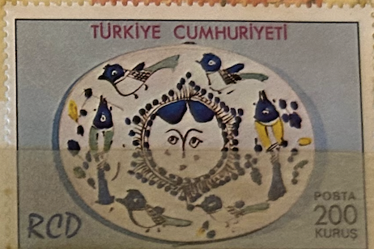
| SOURCE | TITLE| IMAGE MATCH | click to source page |
| esam.ir | تمبر کشور ترکیه | 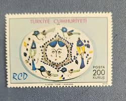 |
| eBay | Persian Tile In Middle Eastern Antiques for sale | eBay | 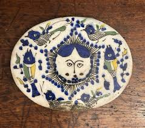 |
| eBay | Persian Pottery | eBay | 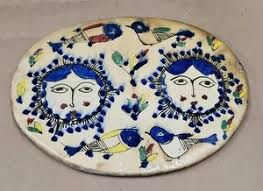 |
| allnumis.com | Stamps Catalog - List of stamps for 1975, Iran | 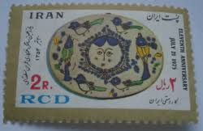 |
| Invaluable.com | Sold at Auction: A LARGE PERSIAN QAJAR CIRCULAR POTTERY BOWL, decorated with birds, 36cm diameter, and a smaller bowl 17cm diameter (2). | 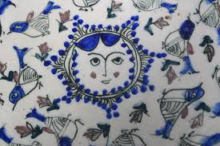 |
| Sunrise "طلوع Mahsa and Marjan Vahdat playlist for Summer Solstice from different albums that has been curated through years and changes with the seasons.The playlist starts with the song "Sunrise" from Marjan | 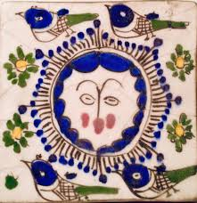 | |
| Photo by Наталья Сироткина (@sn_ceramique) · August 12, 2024 | 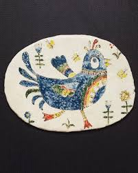 | |
| armstrongcachets.com | Kelly Armstrong Philatelic Covers 2006 | 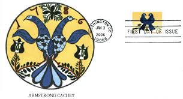 |
| eBay | Double Piece, Very Large Print of original Mixed Media Painting, Signed | eBay | 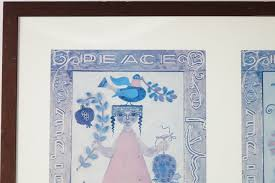 |
| Invaluable.com | Sold at Auction: André Derain, André DERAIN (Chatou, 1880 - Garches, 1954) FEMME DANS UN PAYSAGE Aquarelle et gouache sur papier de forme irrégulière | 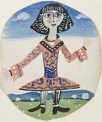 |
| Chiswick Auctions | Lot 307 - FOUR QAJAR-REVIVAL POLYCHROME-PAINTED | 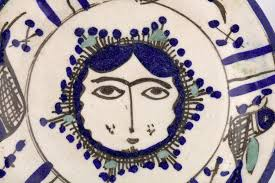 |
| Stirling Community Potters (@stirlingcommunitypotters) • Instagram photos and videos | 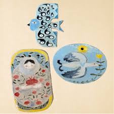 | |
| eBay | turkish pottery products for sale | eBay | 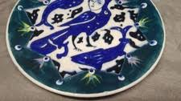 |
| Shutterstock | Istanbul Turkey December 27 2020 Turkish Stock Photo 2690636155 | Shutterstock | 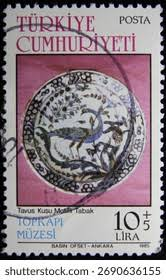 |
| In Anatolian mythology, the goddess of wisdom and the guardian of secrets. | 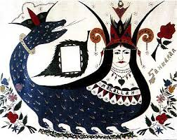 | |
| eBay | Vintage Spanish Tiles | eBay | 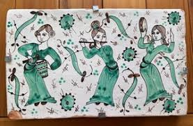 |
| The Chicken Coop Series | Lenoir City TN | 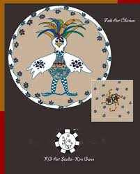 | |
| Etsy | Suzani ""anor" - Embroidered Table Cloth - Etsy Israel | 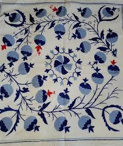 |
| LiveAuctioneers | Maria Prymachenko Signed, Ukrainian 20th Century Modern Folk Art | 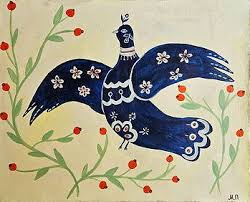 |
| eBay | Kutahya Pottery | eBay | 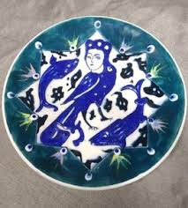 |
| Christie's | A MINA'I POTTERY BOWL , IRAN, LATE 12TH CENTURY | Christie's | 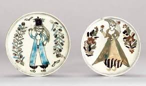 |
| Discover 7 shahmeran and history symbol ideas | mermaid stories, mermaid history, turkish art and more | 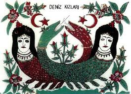 | |
| Dreamstime.com | Bulgaria on postage stamps editorial image. Image of issue - 143062245 | 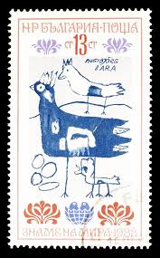 |
| Holyland Marketplace | Pomegranate Challah Board (Blue) – Holyland Marketplace | 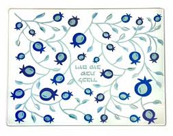 |
| eBay UK | First Day Cover Danish & Faroese Stamps for sale | eBay UK | 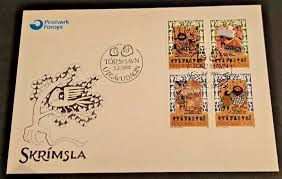 |
| Pin by yasmin münster on lets get artsy | Antique glass, Plates, Antiques | 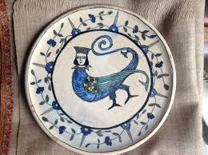 | |
| Flickr | Türk çinileri | I really like those | ounseli | Flickr | 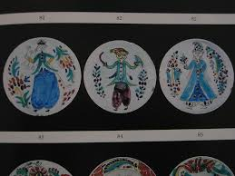 |
| Artsy | Irene Awret | Glazed Israeli Folk Art Naive Tile Figure with Flowers and Birds (20th Century) | Artsy | 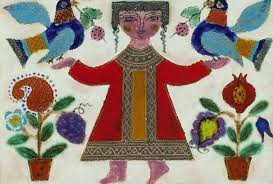 |
| Editorialist | Saved Ny Cashmere Shahmaran Throw In Multi - 20% Off | Editorialist | 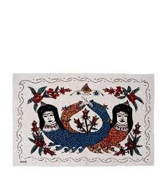 |
| augusts studio | BOX OF 4 DINNER PLATES - FILET ACAPULCO – AUGUSTS STUDIO | 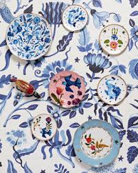 |
| Hello everyone! December is a time of small miracles. this is what I did in December. I used different techniques to decorate my ceramics. This includes underglaze painting, overglaze painting, and gold | 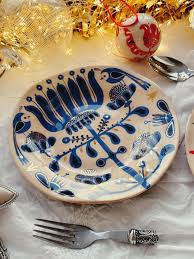 | |
| Etsy | To and Frog Fabric Ruby Star - Etsy | 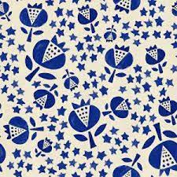 |
| G₱G (@g._.4772) • Instagram photos and videos | 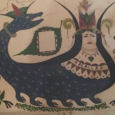 | |
| eBay | 13.5” Hand Painted Folk figure Pottery Hanging Wall Plate,2 headed eagle,Russian | eBay | 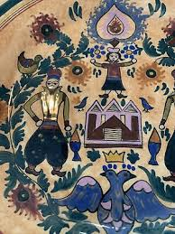 |
| Dreamstime.com | Isolated Turkish Stamp editorial photo. Image of stamp - 410409156 | 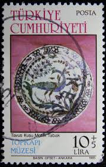 |
| Bureau of Interior Affairs | Decorative Ceramic Platter by David Sol (circa 1950s) – Bureau of Interior Affairs (BIA London) | 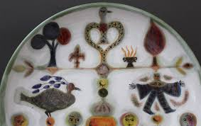 |
| Original watercolors by Mexican artist in Wheeling, WV | 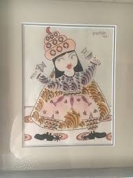 | |
| The Portland Stamp Company | Oana Befort - The Portland Stamp Company - Artist Series No. 25 | 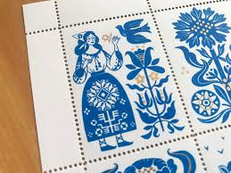 |
| Christie's | A KUTAHYA POTTERY SAUCER DISH, OTTOMAN ANATOLIA, 18TH CENTURY | Christie's | 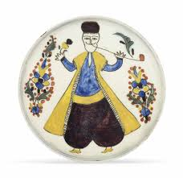 |
| Etsy | Antique Folk Art Mermaid Painting, Mary Ann Willson, Mermaid Fraktur Drawing, Primitive Americana, Early American Wall Art, 19th Century Art - Etsy Denmark | 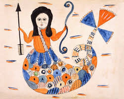 |
| Online Müzayede - Burak Filateli & Müzayedecilik | Şahmeran resimli Cam Altı-39x49cm | Online Müzayede - Burak Filateli & Müzayedecilik | 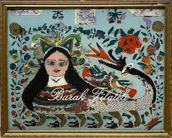 |
| About Schneider Haus | 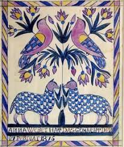 | |
| Blogger.com | My Paisley World: Mariann Johansen-Ellis' Prints from Linocut Heaven | 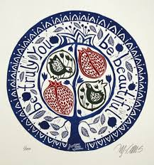 |
| Adam Trest | A Partridge in a Pear Tree – Adam Trest Studio | 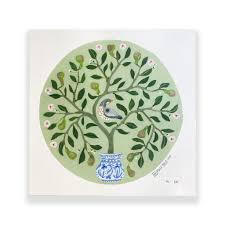 |
| Shutterstock | Malta Circa 1985 Stamp Printed Malta Stock Photo 66587542 | Shutterstock | 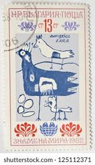 |
| HipPostcard | CPM Safed - Ceramic Relief - Irene and Azriel Awret ISRAEL (1030841) | Asia & Middle East - Israel, Postcard / HipPostcard | 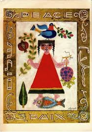 |
| 1stDibs | Large Ceramic Decorative Dish with Characters Signed by Roger Capron, 1955 For Sale at 1stDibs | roger capron ceramics | 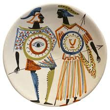 |
| Christie's Auction | AN IZNIK POTTERY DISH, OTTOMAN TURKEY, CIRCA 1580 | Christie's | 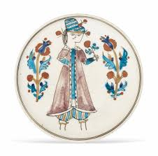 |
| Mahieddine | 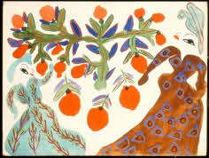 | |
| Vimeo | Celestino Piatti - Archivbesuch | |
| Slideshare | Maria Prymachenko (Ukraine, 1908–1997)3 | PPSX | |
| 18 Shaker Drawings ideas | shaker tree of life drawing, shaker tree of life, shaker artwork | ||
| russellcoates.co.uk | Photo Gallery. Russell Coates, Artist, Potter | |
| Academia.edu | Sylvia Wu - The University of Texas at Austin | |
| Auctionet | STIG LINDBERG. Serving dish and leaf plate, 5 dlr, faience, Studiohånden, Gustavsberg. Ceramics & Porcelain - European - Auctionet | |
| Invaluable.com | Sold at Auction: Azriel Awret, Judaica Azriel & Irene Awret Ceramic Plaque | |
| Chairish | Vintage Georges Briard "Forbidden Fruit" Glass Serving Tray | Chairish | |
| eBay | Vtg Nevco Ceramic Tile Trivet W Holder Pennsylvania Dutch MCM Lovebird 60s Japan | eBay | |
| MutualArt | Birger Kaipiainen | Fat | MutualArt |